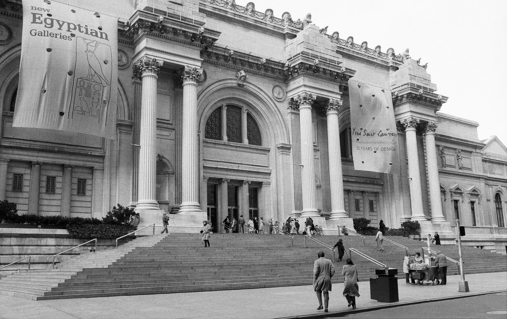

<div class="container my-5">
    <div class="position-relative text-center text-white">
        
        <div class="position-absolute top-50 start-50 translate-middle bg-dark bg-opacity-50 p-5 rounded">
            <h1 class="display-4 fw-bold">About the Museum</h1>
            <p class="lead mt-3">
                <p>Since its founding in 1870, The Met has always aspired to be more than a treasury of rare and beautiful objects. Every day, art comes alive in the Museum's galleries and through its exhibitions and events, revealing new ideas and unexpected connections across time and across cultures.</p>
                <p>The Metropolitan museum of Art presents over 5,000 years of art from around the world for everyone to experience and enjoy.
                </p><p>The Museum lives in two iconic sites in New York City—The Met Fifth Avenue and The Met Cloisters. Millions of people also take part in The Met experience online.</p>


            </p>
        </div>
    </div>


</div>